Префектура Нагасаки · острова Гото · церкви и отели
Острова Гото: церкви тайных христиан, маяк на краю Японии и отели у моря
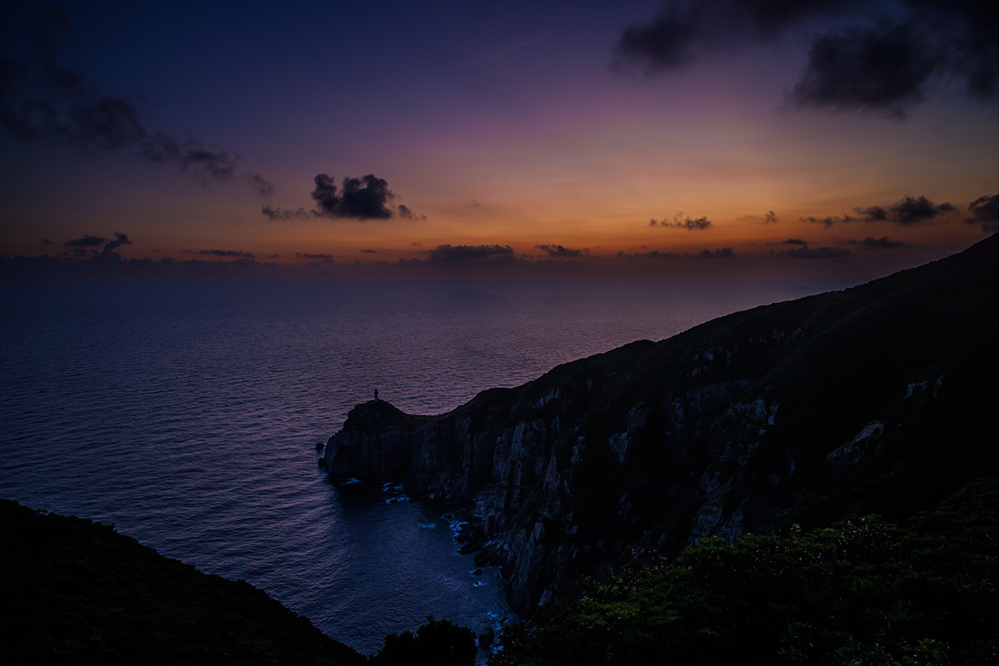
На островах Гото в Восточно-Китайском море христиане веками молились тайно, и их маленькие церкви до сих пор стоят в рыбацких деревнях. Отсюда же когда-то уходили в Китай японские посольства.
Остров
Фукуэ: последний берег перед морем
Острова Гото лежат к западу от Кюсю. До главного из них, Фукуэ, из порта Нагасаки около 90 минут на скоростном судне на подводных крыльях и около трёх часов на пароме. Всего в архипелаге 152 острова, больших и маленьких, и Фукуэ самый крупный. Берег у него очень разный: отвесные скалы, изрезанные бухты и песчаные пляжи, где можно купаться. Внутри острова густые леса и вулканические склоны.
Около 1200 лет назад здесь делали последнюю остановку японские посольства, которые плыли в танский Китай: корабли ждали попутного ветра, прежде чем выйти в открытое море. Позже острова стали важной точкой на торговых путях.
На самом западе Фукуэ стоит маяк Осэдзаки. К нему ведёт горная дорога вдоль гребня над обрывами, и в конце её из зелени вдруг показывается белая башня. Маяк западного образца построили в 1879 году и перестроили в 1971 году, он работает до сих пор.
История
Острова, куда бежали христиане
В эпоху Эдо сёгунат запретил христианство и преследовал верующих. Многие тайные христиане, их в Японии называют «сэмпуку кириситан», переселялись на Гото как колонисты. Земля здесь плохо подходит для земледелия, и жизнь на отдалённых островах была тяжёлой. Старая песня говорит об этом прямо: «Гото будто рай, а приедешь, увидишь ад». Держаться помогали вера, красота островов и закаты над морем.
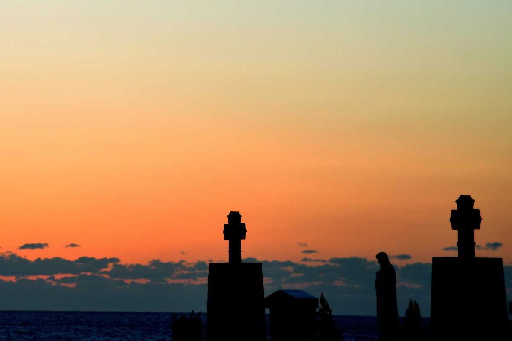
В 2018 году «Объекты наследия тайных христиан в Нагасаки и регионе Амакуса» вошли в список Всемирного наследия ЮНЕСКО, и часть из них находится на Гото. Особенность островов в том, что маленькие церкви сохранились в деревнях почти на каждом крупном острове. Эти люди оставили всё, переплыли море, пережили гонения и сохранили веру, а их наследие и сегодня берегут местные католики. Помнить об этом стоит каждому, кто приезжает сюда как турист.
В последние годы на Гото появились и новые отели. Они уважают историю места и предлагают кухню и занятия, построенные на здешних дарах моря и гор.
Церкви
Маршрут по островам
Церковь Эгами на острове Нару
Католическая церковь на острове Нару. Нынешнее здание прихожане построили в 1918 году, сами расчистив для него место на склоне горы. Стены белые, рамы окон выкрашены в голубой цвет, а вместо витражей цветы нарисованы прямо на прозрачном стекле. В 2008 году эту редкую деревянную церковь признали важным культурным достоянием Японии.
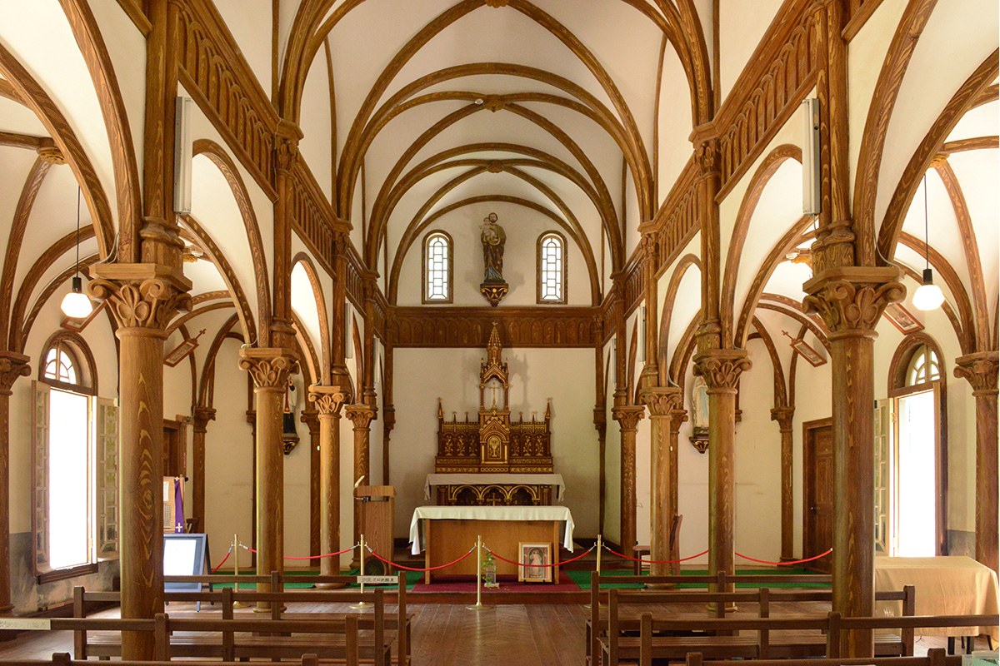
Церковь Эгами
- Адрес
- префектура Нагасаки, Гото, Нару-мати, Огуси, 1131-2
- Телефон
- +81 95-823-7650 (информационный центр объектов наследия тайных христиан)
- Часы работы
- 9:00–12:00, 13:00–15:30, о визите нужно заранее сообщить
- Выходные
- понедельник (если это праздник, то следующий день)
Католическое кладбище Футиномото
На мысу над Восточно-Китайским морем, по которому когда-то шли корабли посольств в Китай, стоят кресты и статуи Девы Марии. Это католическое кладбище, и на закате море под ним становится оранжевым. Место печальное и тихое: здесь легко задуматься о людях, которые столько поколений хранили свою веру.
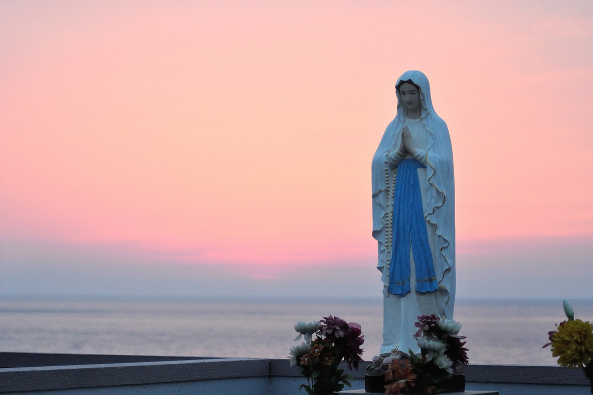
Католическое кладбище Футиномото
- Адрес
- префектура Нагасаки, Гото, Миираку-мати, Футиномото
- Телефон
- +81 959-84-3162 (отделение мэрии Гото в Миираку)
Старая церковь Горин на острове Хисака
Церковь прячется в маленькой рыбацкой деревне на острове Хисака. Её построили в 1881 году в деревне Хамаваки на том же острове, а в 1931 году перенесли сюда. Это самое старое деревянное здание церкви на Гото: готика, в которой заметны японские черты. Как редкий образец архитектуры начала эпохи Мэйдзи она признана важным культурным достоянием страны.
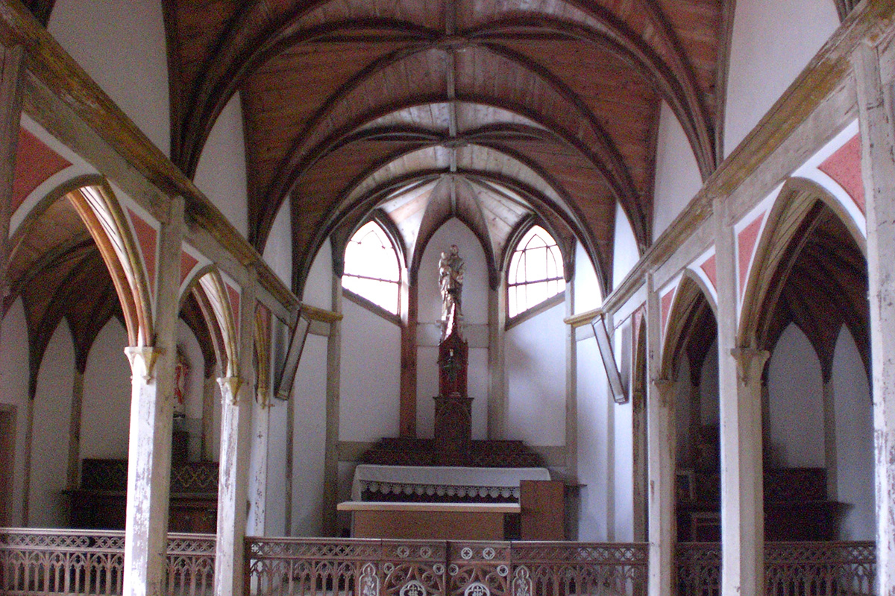
Старая церковь Горин
- Адрес
- префектура Нагасаки, Гото, Варабимати, 993-11
- Телефон
- +81 95-823-7650 (информационный центр объектов наследия тайных христиан)
- Часы работы
- 8:30–12:00, 13:00–16:30, о визите нужно заранее сообщить
- Выходные
- нет
Церковь Додзаки на острове Фукуэ
Церковь из красного кирпича стоит на берегу бухты Окуура, и над водой её охраняет статуя Девы Марии. Здание построил в 1908 году французский миссионер отец Пелю, используя в том числе кирпич из Италии. Сегодня в церкви музей, где показывают документы и вещи времён гонений на христиан.
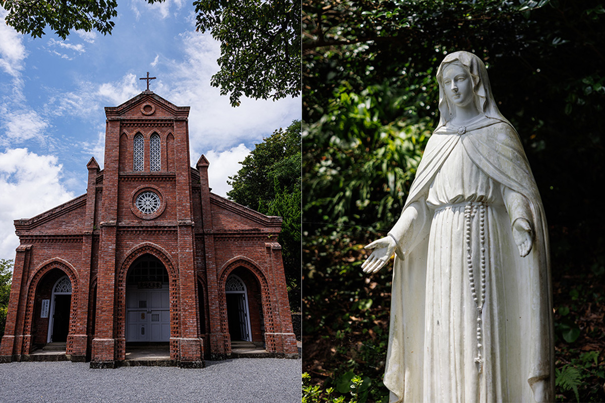
Церковь Додзаки
- Адрес
- префектура Нагасаки, Гото, Окуура-мати, Додзаки, 2019
- Телефон
- +81 959-73-0705
- Часы работы
- 9:00–16:00 (с 11 ноября по 20 марта), 9:00–17:00 (с 21 марта по 10 ноября, во время летних каникул до 18:00)
- Выходные
- новогодние праздники
- Цены / Вход
- взрослые 300 иен, старшеклассники и средняя школа 150 иен, младшая школа 100 иен
Отели
Где отдохнуть после церквей
Goto Retreat ray: свет и молитва
Goto Retreat ray открылся в августе 2022 года. Свет и молитва стали главными темами его интерьеров. Во всех номерах окно во всю стену, и вид на море открывается сразу, как только проснёшься. В лобби стоит длинный стол, в котором отражаются море и небо, и комната будто сливается с пейзажем за окном. В глубине бара устроена комната для медитации: напоминание о том, что Гото издавна были островами молитвы.
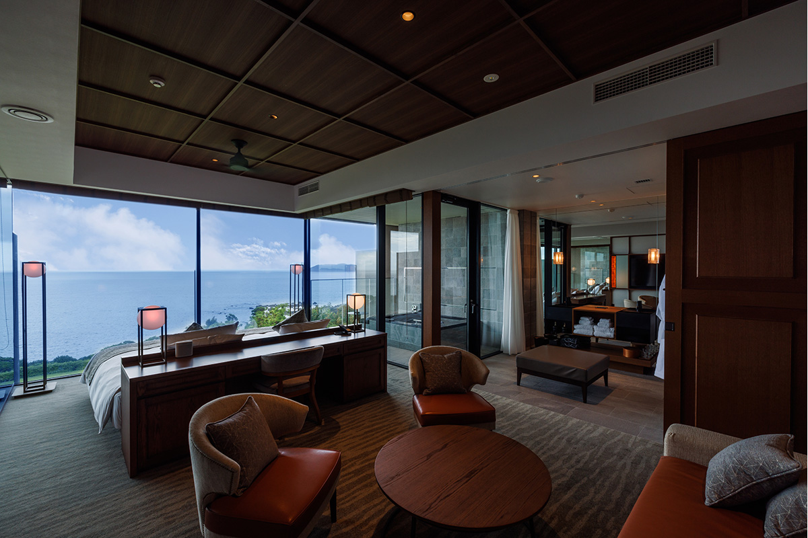
В отеле 26 номеров, ресторан ray dining с японской кухней на завтрак и ужин, бар, спа и магазин. В 2022 году ночь с завтраком и ужином стоила от 51 700 иен, включая налог и сервисный сбор.
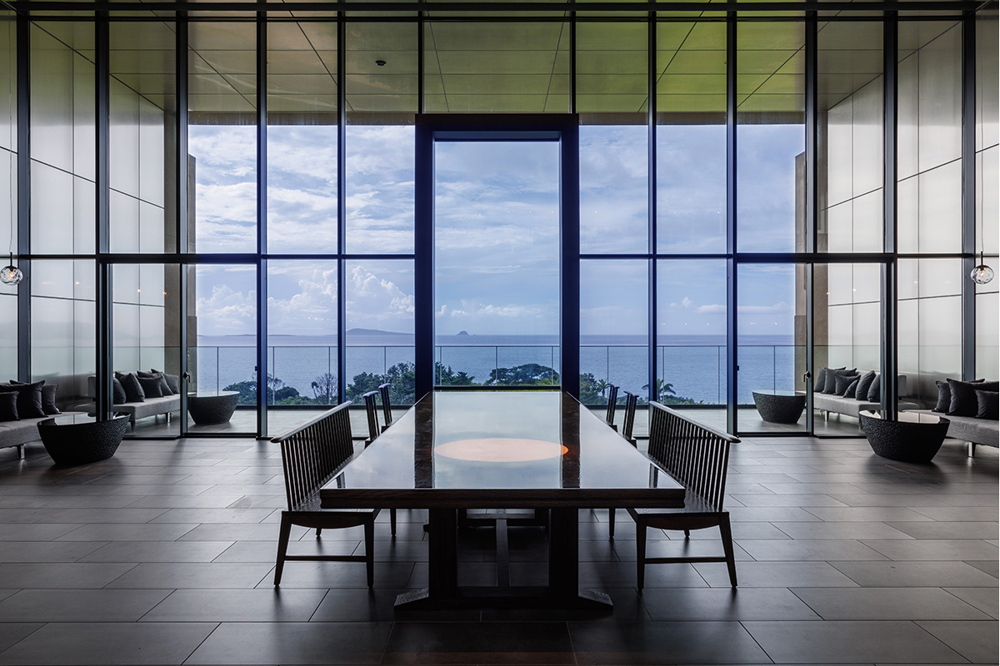
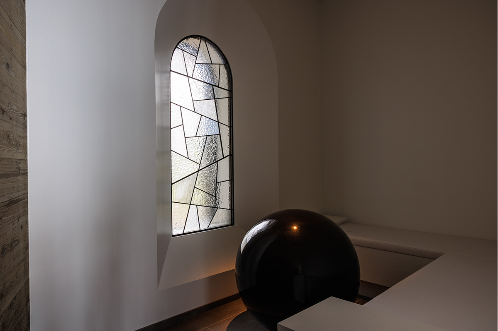
Goto Retreat ray
- Адрес
- префектура Нагасаки, Гото, Камисакияма-мати, 2877
- Телефон
- +81 959-78-5551
- Номера
- 26
- Заезд / выезд
- 15:00 / 11:00
- Цены / Вход
- от 51 700 иен за ночь с завтраком и ужином, с налогом и сервисным сбором
- Как добраться
- около 10 минут на машине от аэропорта Фукуэ
«Карарито Гото-рэтто»: природа Гото без остатка
Этот отель задуман для тех, кто хочет как следует поиграть с природой островов. Номера здесь двухуровневые, в них удобно жить неделю и дольше. Есть варианты прямо у пляжа. Занятия, ради которых едут на острова, можно взять вместе с сотрудниками отеля.
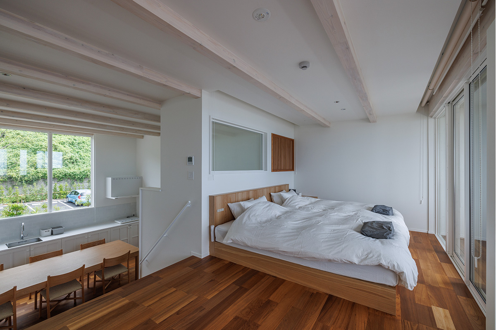
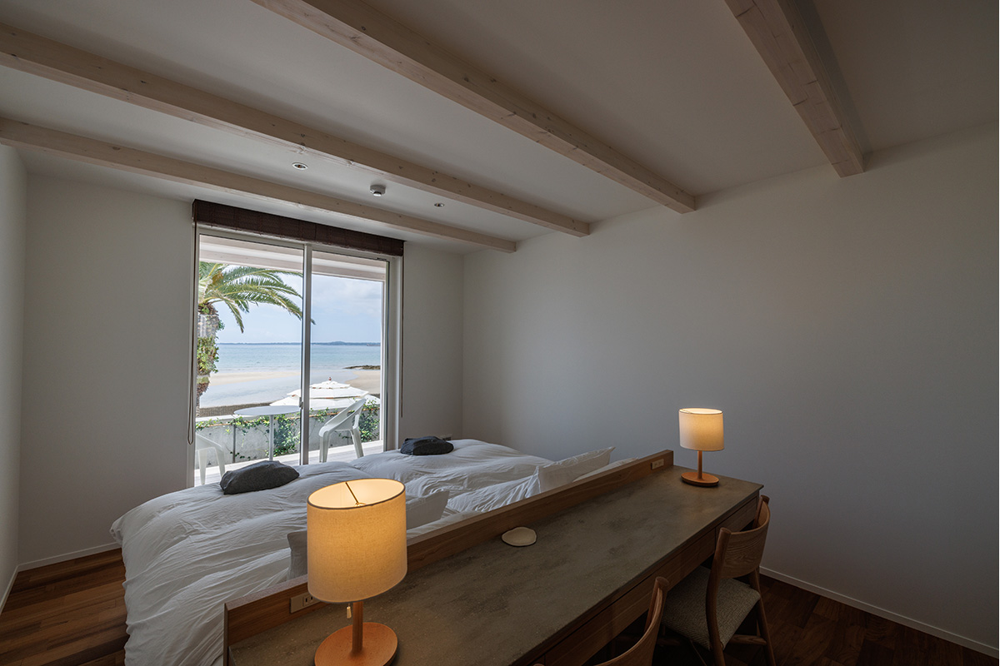
В отеле 48 номеров, ресторан с японской и западной кухней, большая общая баня, деревянная терраса и магазин. В 2022 году ночь с завтраком и ужином стоила от 17 500 иен, включая налог и сервисный сбор.
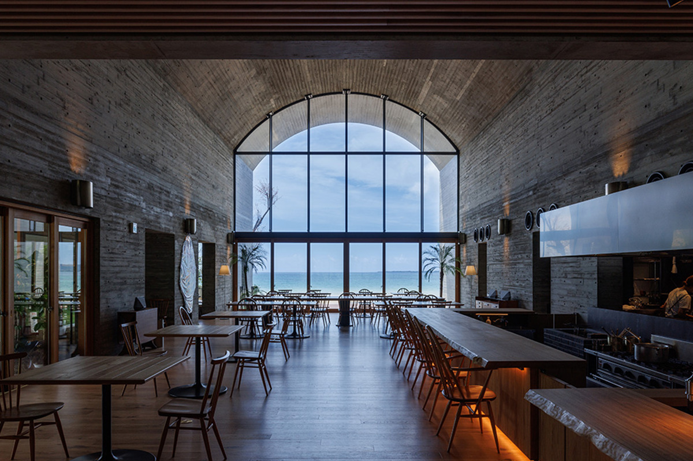
«Карарито Гото-рэтто»
- Адрес
- префектура Нагасаки, Гото, Хама-мати, 546-2
- Телефон
- +81 959-78-5110
- Номера
- 48
- Заезд / выезд
- 15:00 / 11:00
- Цены / Вход
- от 17 500 иен за ночь с завтраком и ужином, с налогом и сервисным сбором
- Как добраться
- около 15 минут на машине от аэропорта Фукуэ
Дорога
Как добраться до Гото
Из порта Нагасаки до порта Фукуэ около 90 минут на судне на подводных крыльях или около 180 минут на пароме. В аэропорт Нагасаки летают из Ханэды (около 110 минут), из Итами и Кансая (около 70 минут). До аэропорта Фукуэ около 30 минут лёта из Нагасаки и около 40 минут из Фукуоки. Между островами регулярно ходят скоростные суда и паромы.
Фото: Садахо Найто.